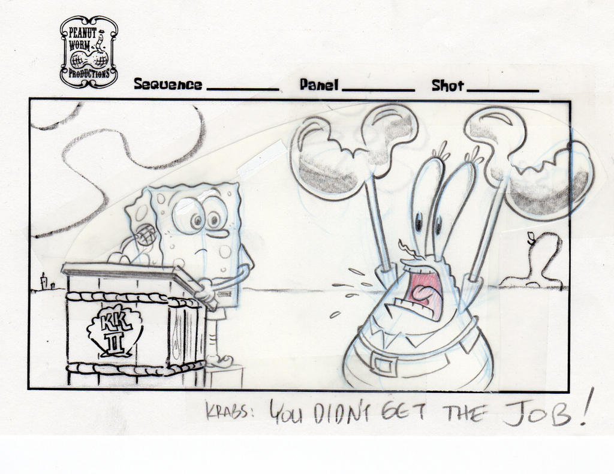
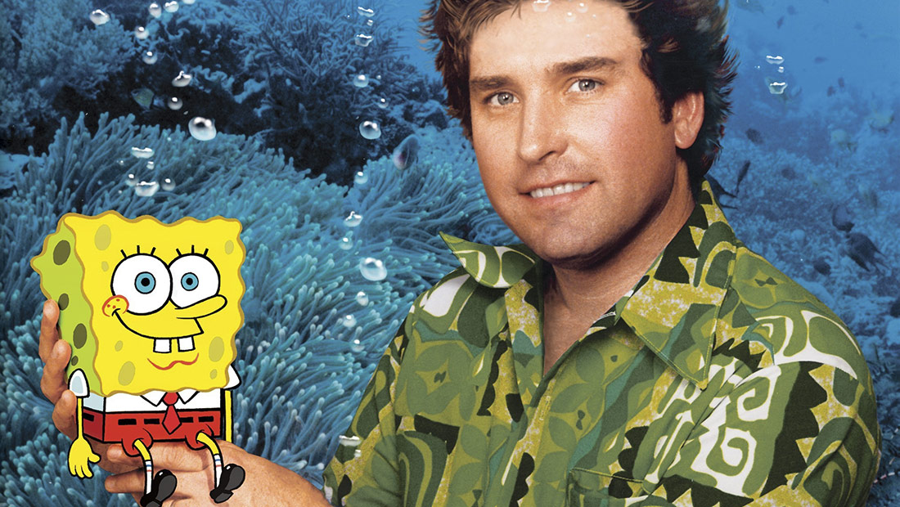

Series' creator Stephen Hillenburg first became fascinated with the ocean as a child and began developing his artistic abilities at a young age. Although these interests would not overlap for some time—the idea of drawing fish seemed boring to him—Hillenburg pursued both during college, majoring in marine biology and minoring in art. After graduating in 1984, he joined the Ocean Institute, an organization in Dana Point, California, dedicated to educating the public about marine science and maritime history.
While Hillenburg was there, his love of the ocean began to influence his artistry. He created a precursor to SpongeBob SquarePants: a comic book titled The Intertidal Zone used by the institute to teach visiting students about the animal life of tide pools.The comic starred various anthropomorphic sea lifeforms, many of which would evolve into SpongeBob SquarePants characters.Hillenburg tried to get the comic professionally published, but none of the companies he sent it to were interested.
A large inspiration to Hillenburg was Ween's 1997 album The Mollusk, which had a nautical and underwater theme. Hillenburg contacted the band shortly after the album's release, explaining the baseline ideas for SpongeBob SquarePants, and also requested a song from the band, which they sent on Christmas Eve. This song was "Loop de Loop", which was used in the episode "Your Shoe's Untied".
While working as a staff artist at the Ocean Institute, Hillenburg entertained plans to return eventually to college for a master's degree in art. Before this could materialize, he attended an animation festival, which inspired him to make a slight change in course. Instead of continuing his education with a traditional art program, Hillenburg chose to study experimental animation at the California Institute of the Arts. His thesis film, Wormholes, is about the theory of relativity. It was screened at festivals, and at one of these, Hillenburg met Joe Murray, creator of the popular Nickelodeon animated series, Rocko's Modern Life. Murray was impressed by the style of the film and offered Hillenburg a job. Hillenburg joined the series as a director, and later, during the fourth season, he took on the roles of producer and creative director.
Derek Drymon, who served as creative director for the first three seasons, has said that Hillenburg wanted to surround himself with a "team of young and hungry people." Many of the major contributors to SpongeBob SquarePants had worked before with Hillenburg on Rocko's Modern Life: this included: Drymon, art director Nick Jennings, supervising director Alan Smart, writer/voice actor Doug Lawrence (often credited as Mr. Lawrence), and Tim Hill, who helped develop the series bible.
Although Drymon would go on to have a significant influence on SpongeBob SquarePants, he was not offered a role on the series initially. As a late recruit to Rocko's Modern Life, he had not established much of a relationship with Hillenburg before SpongeBob's conception. Hillenburg first sought out Drymon's storyboard partner, Mark O'Hare—but he had just created the soon-to-be syndicated comic strip, Citizen Dog. While he would later join SpongeBob as a writer, he lacked the time to get involved with both projects from the outset. Drymon has said, "I remember Hillenburg's bringing it up to Mark in our office and asking him if he'd be interested in working on it ... I was all ready to say yes to the offer, but Steve didn't ask; he just left the room. I was pretty desperate ... so I ran into the hall after him and basically begged him for the job. He didn't jump at the chance." Once Hillenburg had given it some thought and decided to bring Drymon on as creative director, the two began meeting at Hillenburg's house several times a week to develop the series. Drymon has identified this period as having begun in 1996, shortly after the end of Rocko's Modern Life.
Jennings was also instrumental in SpongeBob's genesis.[49] Kenny has called him "one of SpongeBob's early graphics mentors". On weekends, Kenny joined Hillenburg, Jennings, and Drymon for creative sessions where they recorded ideas on a tape recorder. Kenny performed audio tests as SpongeBob during these sessions, while Hillenburg voice acted the other characters.
Hill contributed scripts for several first-season episodes (including the pilot) and was offered the role of story editor, but turned it down—he would go on to pursue a career as a family film director. In his stead, Pete Burns was brought in for the job. Burns hailed from Chicago and had never met any of the principal players on SpongeBob before joining the team.
While pitching the cartoon to Nickelodeon executives, Hillenburg donned a Hawaiian shirt, brought along an "underwater terrarium with models of the characters", and played Hawaiian music to set the theme. The setup was described by Nickelodeon executive Eric Coleman as "pretty amazing". They were given money and two weeks to write the pilot episode "Help Wanted". Drymon, Hillenburg, and Jennings returned with what was described by Nickelodeon official Albie Hecht as, "a performance [he] wished [he] had on tape". Although executive producer Derek Drymon described the pitch as stressful, he said it went "very well". Kevin Kay and Hecht had to step outside because they were "exhausted from laughing", which worried the cartoonists.
In an interview, Cyma Zarghami, then-president of Nickelodeon, said, "their [Nickelodeon executives'] immediate reaction was to see it again, both because they liked it and it was unlike anything they'd ever seen before". Zarghami was one of four executives in the room when SpongeBob SquarePants was screened for the first time.
Before commissioning the full series, Nickelodeon executives insisted that it would not be popular unless SpongeBob was a child who went to school, with his teacher as a main character. Hillenburg recalled in 2012 that Nickelodeon told him, "Our winning formula is animation about kids in school... We want you to put SpongeBob in school." Hillenburg was ready to "walk out" on Nickelodeon and abandon the series, since he wanted SpongeBob to be an adult character. He eventually compromised by adding a new character to the main cast, Mrs. Puff, who is a boat-driving teacher. Hillenburg was happy with the compromise and said, "A positive thing for me that came out of it was [how it brought] in a new character, Mrs. Puff, who I love."
Until his death in 2018, Hillenburg had served as the executive producer over the course of the series' entire history and functioned as its showrunner from its debut in 1999 until 2004. The series went on hiatus in 2002, after Hillenburg halted production on the show itself to work on the feature film The SpongeBob SquarePants Movie. Once the film was finalized and the third season finished, Hillenburg resigned as the series' showrunner. Although he no longer had a direct role in the series' production, he maintained an advisory role and reviewed each episode.
When the film was completed, Hillenburg intended it to be the series finale, "so [the show] wouldn't jump the shark." However, Nickelodeon wanted more episodes. Hillenburg appointed Paul Tibbitt, who had previously served on the show as a writer, director, and storyboard artist, to take over his role as showrunner to produce additional seasons. Hillenburg considered Tibbitt one of his favorite members of the show's crew, and "totally trusted him".
On December 13, 2014, it was announced that Hillenburg would return to the series in an unspecified position. On November 26, 2018, at the age of 57, Hillenburg died from complications from amyotrophic lateral sclerosis (ALS), which he had been diagnosed with in March 2017. Nickelodeon confirmed via Twitter the series would continue after his death. In February 2019, incoming president Brian Robbins vowed Nickelodeon would keep the show in production for as long as the network exists.